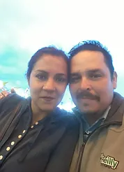

Bienvenidos a Ministerios Palabra Viva
La mision continua
Sobre nosotros
Somos una Iglesia Evangélica Libre; esto nos permite tener compañerismo con todas las denominaciones.
Tenemos concilio y cobertura a nivel Nacional en México. Somos una Iglesia registrada ante gobernación . SGAR/3679/2012
Pastores
Miguel y Elizabeth Ornelas
Nuestras creencias
Creemos en la inspiración plena de las Escrituras. 2 Timoteo 3:16.
Creemos en la humanidad de Jesús y su Divinidad100% hombre.
Creemos en el Rapto de la Iglesia y en la segunda venida de Cristo, el Milenio, el Tribunal de Cristo, el gran juicio.
Creemos en la guía del Espíritu Santo. El obra en nosotros capacitando a la Iglesia para ser testigos eficaces de nuestro Señor Jesucristo. Hechos 10:37-38.
Creemos en la salvación por gracia. Esta es un regalo al aceptar el Señorío de cristo en nuestras vidas.
Creemos en el sacrificio perfecto de CRISTO como sustituto de la humanidad. Gálatas 4:4-7.
Nuestra mision
Adoracion
Adoración: la iglesia fue creada por Dios y para sus propósitos. Adorar no solo es venir los días de culto a la iglesia, mas bien, adorar es un estilo de vida. Dios es el centro de todo lo que hacemos. Rendimos nuestra vida por completo a él, no solo religiosamente, sino, espiritual y verdaderamente.
Evangelismo
Evangelismo: nuestra misión es hablar de Jesús, de lo que él hizo por nosotros en la cruz y como nos da la oportunidad de experimentar una nueva vida. Este es el mensaje que compartimos y se llama buenas noticias. Marcos 16:15.
Comunion
Comunión: esta misión es una de las más emocionantes, que a pesar de tener diferentes caracteres y formas de pensar, nos une Jesús. Él fue el único en juntar en su grupo de 12 a un cobrador de impuestos como Mateo y a un revolucionario como Simón, el Cananista, al vivir en comunidad cumpliendo el mandato de ser uno en Jesús, así como él es uno con él padre. Juan 17:21.
Discipulado
Discipulado: la misión es aprender y enseñar los principios bíblicos en la palabra de Dios. La palabra "doctrina" quiere decir forma de vida; tenemos que vivir para cumplir los propósitos de Dios. Mateo 28:19.
Ministerio
Discipulado: la misión es aprender y enseñar los principios bíblicos en la palabra de Dios. La palabra "doctrina" quiere decir forma de vida; tenemos que vivir para cumplir los propósitos de Dios. Mateo 28:19.